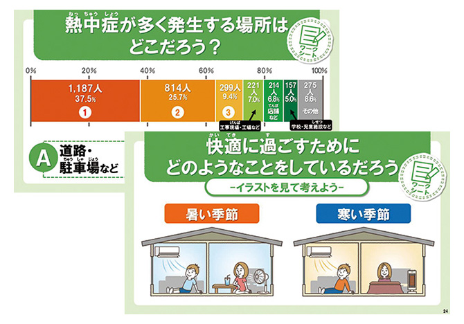
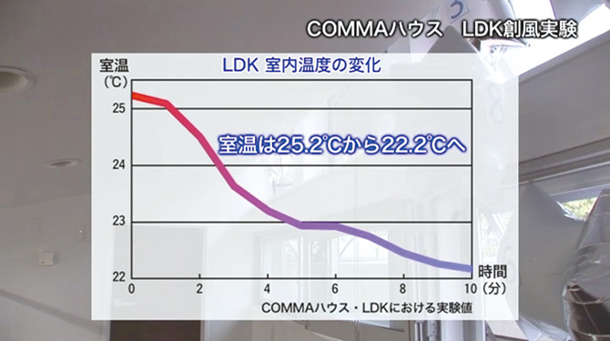
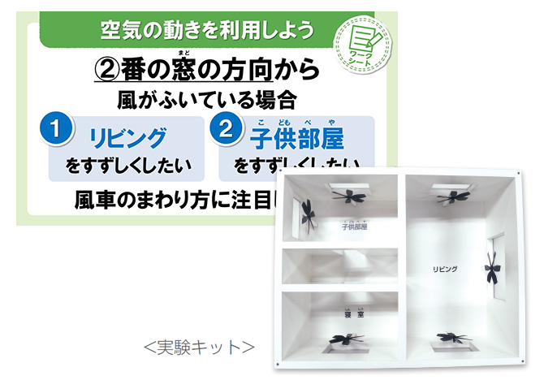
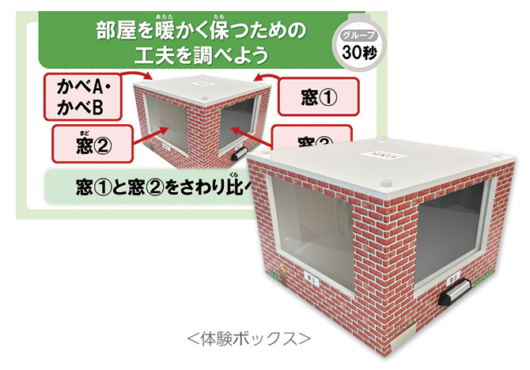

健康と環境によい住まい方
世界でも珍しい四季のある日本。１年を通して暑い日もあれば寒い日もありますが、近年の発表では、室内熱中症で救急搬送される人が約3.8万人、冬にヒートショック（暖かい部屋と冷えた部屋の温度差で心筋梗塞や脳卒中を起こすこと）が原因の一つで入浴中に亡くなる人が約1.9万人と、室内の暑さ・寒さが命をおびやかす危険性が指摘されています。
どんな季節でも健康で快適に過ごす上では、室内温度を調節することが大切です。しかし、家庭の消費エネルギーの約4分の1を占める冷暖房の使いすぎは地球温暖化問題の原因の一つ。上昇し続ける地球の平均気温は、最悪の場合、次の100年でさらに約4.4℃以上上昇する可能性があり、「健康」と「環境」の両方の視点をもつことが重要です。
ヒトと地球にやさしい住環境づくりをめざすLIXILは、「室内温度」に着目し、「省エネ」かつ「健康・快適」な暮らしを実現するために住まいでできることを、｢学び・体感｣ を通じてお客様とともに考え、取り組む「THINK HEAT～考えよう ヒトと地球にやさしい温度～」を展開していますが、その活動の一環で2018年にスタートしたのが出前授業「健康と環境によい住まい方」です。授業では、自然の力を生かした工夫をすることで、「健康」と「環境の両方を実現できる住まい方を伝えています。
講師をつとめるのは、全国各地にある事業所の従業員です。地域の子どもたちと直接触れ合いながら、従業員一人一人が地域のかかわりや次世代育成について考えるきっかけにもなっています。
 ＊このプログラムは、東京 2020 公認教育プログラム（ようい、ドン！）の一つです。
＊このプログラムは、東京 2020 公認教育プログラム（ようい、ドン！）の一つです。
東京2020参画プログラム 公式サイト >
授業の概要
| 対象 | 小学5—6年生 |
|---|---|
| 関連教科 | 家庭科「快適な住まい方」 |
| 授業時間 | 全2時間（45分×2コマ） |
| 教材 | 体験ボックスなどのオリジナルツール |
| 内容 |
|
教材 例
【スライド】「熱中症が多く発生する場所は？」「寒い季節に快適に過ごすには？」 クイズを通して快適な住まい方について考え、健康と環境の両方の視点の必要性を学びます。
【映像】室内に浮かぶ風船の動きを観察。高い窓と低い窓を開けることで、空気の性質を利用して空気の動きをつくる「創風の工夫」について学びます。
【実験】実験キットを利用して、家全体を１つの部屋ととらえ、空気の入口と出口をつくることで効果的に「通風の工夫」ができることを実感します。
【体験】体験ボックスに、カーテンをつけるなどして空気の層をつくる「断熱の工夫」を体感。家の中の空気を暖かく保つ方法を学びます。
※教材の内容は一部変更になる場合があります。
活動の実績
2019年3月期は、19校45回、1,430名に授業を実施しました。
子どもの感想
- 電気をこまめに消すことや、カーテンの開け閉めなど、ふだん何気なくやっていると思っていたことが、大きな意味（理由）を持っていると分かった。
- 実験を行ったため、楽しかったし、目で確認できた。また、自然の力を生かせば快適に過ごせると知ることができた。
- 空気の動きの実験では、どの窓を開けるかにより、すずしさが全く違うことが分かりました。とても楽しかったです。ありがとうございました。
- 空気（風）は入口と出口がないといみがないことが分かりました。寒い冬は日中カーテンを開けたり色々と工夫できることがたくさんありました。夏も工夫できることがあったので今年さっそく窓を開けたりしてみたいと思います。
先生の感想
- 実験があることで児童自身が考え、いろいろな条件を比較しながら空気の出入口について考えることができた。学習内容を体感することができ、効果的であった。来年もぜひ実施したい。
- 持続可能な社会の構築に向けて、会社がどんなことに取り組んでいるのか、どんな理念をもって講師がその仕事をしているのかについて知る機会にもなった。
- 講師が児童の意見を引き出してくれていたので、自由な発言が積極的にできていた。
今後の活動
自然の力を生かした健康と環境が両立できる快適な住まい方を、授業を通じてより多くの子どもたちが自ら考え実践できるよう、これからも講座を続けていきます。